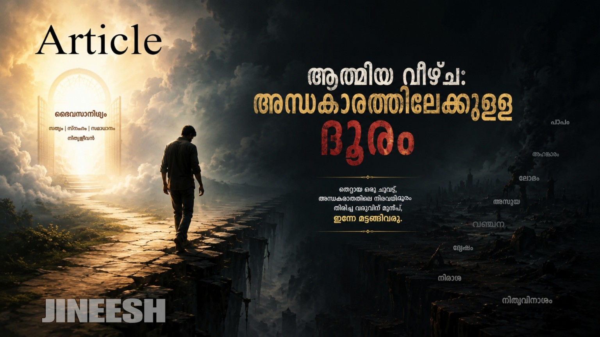

മനുഷ്യജീവിതത്തിൽ പലതരത്തിലുള്ള വീഴ്ചകളുണ്ട്. എന്നാൽ, ഒരു മനുഷ്യന് 'ആത്മീയ വീഴ്ച' സംഭവിക്കുമ്പോഴാണ് ലോകം അത് കണ്ട് ഏറ്റവും കൂടുതൽ രസിക്കുന്നത്. ഒന്നുകൂടി ആഴത്തിൽ ചിന്തിച്ചാൽ, സ്വന്തം പ്രിയപ്പെട്ടവർ പോലും ചിലപ്പോൾ ഈ വീഴ്ചയിൽ ഉള്ളാലെ സന്തോഷിച്ചേക്കാം. കാലത്തിന്റെ നേർക്കാഴ്ചയിൽ എന്നും ഒറ്റപ്പെട്ടവരായിരിക്കും ഇത്തരം ആത്മീയ വീഴ്ച സംഭവിച്ചവർ. ഏദൻ തോട്ടത്തിൽ സംഭവിച്ചതും അത്തരമൊരു വീഴ്ചയായിരുന്നു; അതിരുകളില്ലാത്ത അറിവ് തേടിപ്പോയതാണ് അവിടെ വിനയായതെന്ന് പറയുന്നതിൽ തെറ്റില്ല.
യഥാർത്ഥത്തിൽ എന്താണ് വീഴ്ച? ഉള്ളിലുള്ള ആത്മീയ വെളിച്ചം കെട്ടുപോവുകയും, ആ വ്യക്തി ഇരുട്ടിന്റെ അടിമയായി മാറുകയും ചെയ്യുന്നതിനെയാണ് 'വീഴ്ച' എന്ന് വിളിക്കുന്നത്. ഇത് എങ്ങനെ സംഭവിക്കുന്നു എന്ന് നോക്കാം. ആത്മീയ വെളിച്ചവുമായി ഈ ഇരുണ്ട ലോകത്ത് നാം ജീവിക്കുമ്പോൾ ചുറ്റും അഗാധമായ ഗർത്തങ്ങളുണ്ട്. നമ്മളെ തൊടാതെയിരിക്കാനും, പടർപ്പുകൾ പോലെ വരിഞ്ഞുമുറുക്കി മൂടാതിരിക്കാനും ദൈവം ചില നിഗൂഢ ശക്തികളെ ഈ ലോകത്തിന്റെ അഗാധതയിൽ ബന്ധിപ്പിച്ചിട്ടുണ്ട്. എന്നാൽ, നമ്മുടെ ഉള്ളിലെ ആത്മീയ വെളിച്ചം നാം തന്നെ കെടുത്തിക്കളഞ്ഞാൽ, ആ സംരക്ഷണം മാറുകയും ആ ഇരുണ്ട ശക്തികൾ നമ്മളെയും ബന്ധിക്കുകയും ചെയ്യും. പിന്നീടുള്ള ജീവിതം വെളിച്ചമില്ലാത്തവനെപ്പോലെ, അല്ലെങ്കിൽ വീഴ്ച പറ്റിയവനെപ്പോലെ അന്ധമായിരിക്കും.
ദൈവിക അറിവുകൾ ലഭിച്ച ഒരുവന് വീഴ്ച പറ്റിയാൽ, പിന്നീട് ശരിയും തെറ്റും തിരിച്ചറിയാൻ അവന് കഴിയാതെ വരും. അവന്റെ കണ്മുമ്പിൽ ഭൂമി രണ്ടായി പിളർന്നു കാണിച്ചാൽ പോലും അവനൊരു അനക്കവും ഉണ്ടാകില്ല. കാരണം, അവൻ അറിയാതെ തന്നെ ഒരു അദൃശ്യ ലോകത്തിന്റെ അടിമയായി മാറിക്കഴിഞ്ഞു. ഇത് പലർക്കും അറിയാത്ത ഒരു സത്യമാണ്. ഇന്നത്തെ കാലത്ത്, ദൈവത്തിന്റെ ആലയത്തിൽ ഇരുന്നുപോഴും ദൈവത്തെ ഒരു കച്ചവടവസ്തുവാക്കി മാറ്റുന്നവർ ഉണ്ടെങ്കിൽ, അവർ ഈ ഇരുട്ടിന്റെ ശക്തിയുടെ അടിമയായതുകൊണ്ട് മാത്രമാണ് അങ്ങനെ ചെയ്യുന്നത്. സഭകളിൽ നോക്കിയാൽ നമുക്ക് ഇത്തരക്കാരെ കാണാൻ കഴിയും; ചുരുക്കിപ്പറഞ്ഞാൽ ആത്മീയ വസ്ത്രം മാത്രം ധരിച്ച, ഉള്ളിൽ പൊള്ളയായ മനുഷ്യർ. ഇങ്ങനെയുള്ളവരുടെ കഴുത്തിൽ കാണാത്ത ഒരു ചങ്ങലയുണ്ട്; അതിന്റെ അറ്റം പിടിച്ചിരിക്കുന്നത് അന്ധകാര ലോകത്തിന്റെ അധിപതിയാണെന്ന സത്യം പലപ്പോഴും മനുഷ്യർ മറന്നുപോകുന്നു.
വേദപുസ്തകത്തിലെ ശൗലിന്റെ ചരിത്രം നമുക്കെല്ലാവർക്കും അറിയാം. വലിയൊരു ആത്മീയനായി വന്നിട്ട് ഒടുവിൽ ഇരുട്ടിന്റെ ലോകത്തിലെ അടിമയായി മാറിയവൻ. അന്ധകാര ശക്തിയെ കൂട്ടുപിടിച്ച് ശമുവേലിനെ മരണത്തിൽ നിന്നും തിരികെ വിളിക്കാൻ ശ്രമിച്ചതിലൂടെ, ശൗൽ പിശാചുക്കളുടെ പൂർണ്ണ അടിമയായി മാറിക്കഴിഞ്ഞു എന്ന് നിസ്സംശയം പറയാം. ഇത്തരത്തിലുള്ള മനുഷ്യരെ ഇന്നും നമുക്ക് ചുറ്റും കാണാൻ കഴിയും.
ഈ ഭൂമിയിൽ ദൈവം മനുഷ്യനെ സൃഷ്ടിച്ചു ആക്കിവെച്ചിരിക്കുന്നത് ഒരു പ്രത്യേക തരത്തിലാണ്. മനുഷ്യൻ അറിയാതെ പല കാര്യങ്ങളും ദൈവം നമ്മുടെ കണ്ണിൽ നിന്നും മറച്ചുവെച്ചിരിക്കുന്നു. ആർക്കും കാണാൻ കഴിയാത്ത ചില നിഗൂഢ രഹസ്യങ്ങൾ, ആർക്കും കേൾക്കാൻ കഴിയാത്ത ചില ശബ്ദങ്ങൾ... ഇവയെല്ലാം ദൈവം നമ്മുടെ മുമ്പിൽ നിന്നും നീക്കിക്കളഞ്ഞത് നമ്മുടെ നന്മയ്ക്കാണ്. അതുകൊണ്ട്, ദൈവം തിരഞ്ഞെടുത്തവർ വീഴാതെ സൂക്ഷിക്കേണ്ടത് അവരവരുടെ കടമയാണ്. ആ വേലികൾ ലംഘിച്ചാൽ, വലിയൊരു മഹാ സത്യലോകത്തിന്റെ ഉള്ളിലേക്ക് പ്രവേശിക്കാൻ കഴിയാതെ നാം പുറത്ത് പെട്ടുപോകും.
അതുകൊണ്ട്, നമ്മുടെ ഉള്ളിലെ ആത്മീയ വെളിച്ചം കെട്ടുപോകാതെ എങ്ങനെ സൂക്ഷിക്കണം?
• ദൈവഹിതമല്ലാത്ത പ്രവർത്തികൾ ചെയ്യാതിരിക്കുക.
• ദൈവത്തെ മുഷിപ്പിക്കാതിരിക്കുക.
• ദൈവത്തെ കോപിപ്പിക്കാതിരിക്കുക.
ഉള്ളിലെ വെളിച്ചം നഷ്ടമായാൽ, നമ്മളെ ആകർഷിക്കാൻ അനേകം ഇരുട്ടിന്റെ ശക്തികൾ കാത്തുനിൽക്കുന്നുണ്ടെന്ന് തിരിച്ചറിയുക. ഒരിക്കൽ ആ വെളിച്ചം നഷ്ടപ്പെട്ടാൽ, പിന്നെ ഒരു തിരിച്ചുവരവ് ഉണ്ടാവില്ല. കാരണം, കാൽവരിയിൽ നമുക്ക് വേണ്ടി ക്രിസ്തു ഒരിക്കൽ എന്നെന്നേക്കുമായി ജീവൻ നൽകിക്കഴിഞ്ഞു. ഇനി ക്രിസ്തു വരുന്നത് പാപികളെ തേടിയല്ല, മറിച്ച് വിശുദ്ധന്മാരെ (ആത്മീയ വെളിച്ചം നഷ്ടപ്പെടാത്തവരെ) തേടിയാണ്. അത് നഷ്ടപ്പെടുത്തിയ ബാക്കിയുള്ള മനുഷ്യരുടെ അവസ്ഥ... അയ്യോ കഷ്ടം!
Br Jineesh Punalur